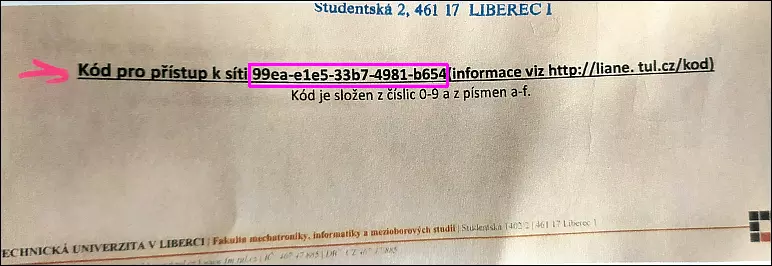

Jaké jsou mé přihlašovací údaje?
Uživatelské jméno pro přístup do sítě Liane je automaticky vytvořeno pomocí informací ve STAGu. Vaše uživatelské jméno bude ve formátu jmeno.prijmeni. Pro vytvoření hesla přejděte na tento odkaz a zadejte zde váš 20 místný kód, který najdete ve vašem Rozhodnutí o přijetí ke studiu.
Stránka vás nyní vyzve k zadání části vašeho rodného čísla, které bylo použito pro přihlášení ke studiu. Zahraniční studenti zde zadají část svého pseudo-rodného čísla.
Nyní si můžete nastavit své heslo do sítě Liane. Heslo musí mít alespoň 10 znaků a musí obsahovat písmena i čísla.
Kód pro přístup k vytvoření hesla lze použít pouze jednou. V případě přerušení tvorby hesla ho nebude možné použít znovu. Pokud vám nastane tento či jiný problém, obraťte se na své studijní oddělení nebo na správu Liane v budově A.